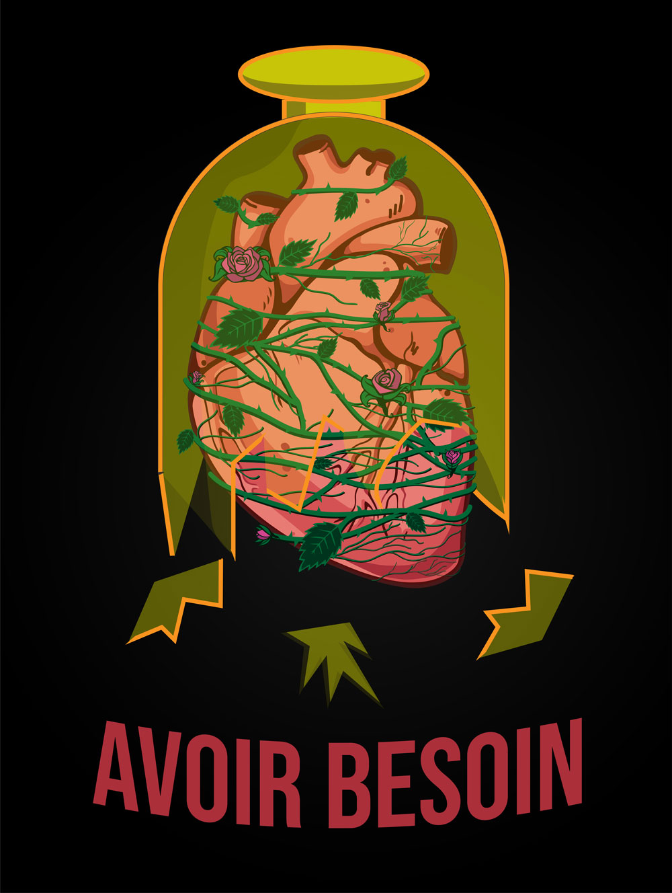
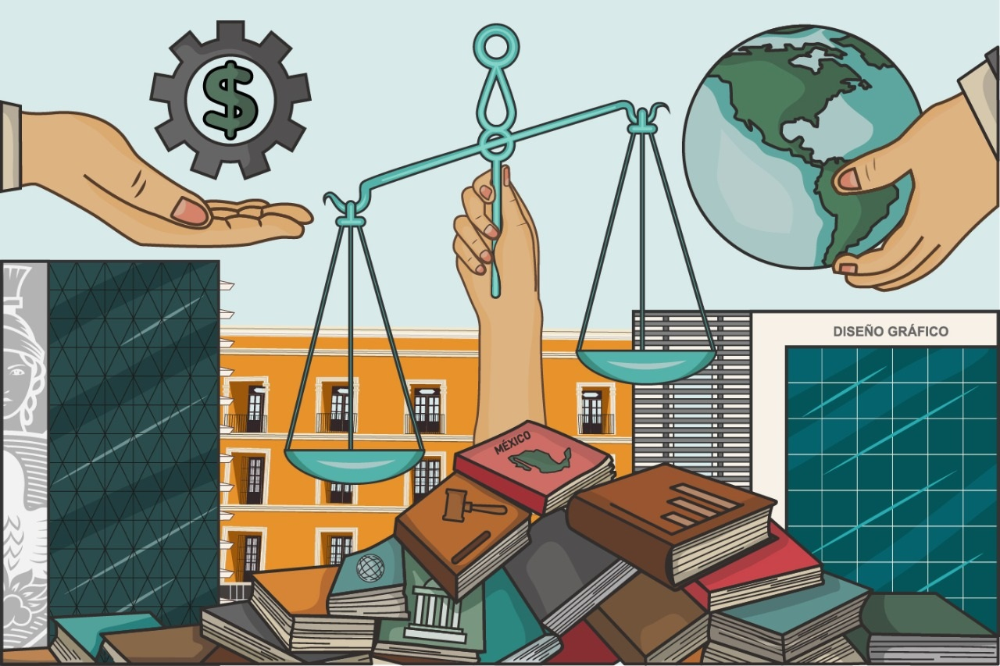
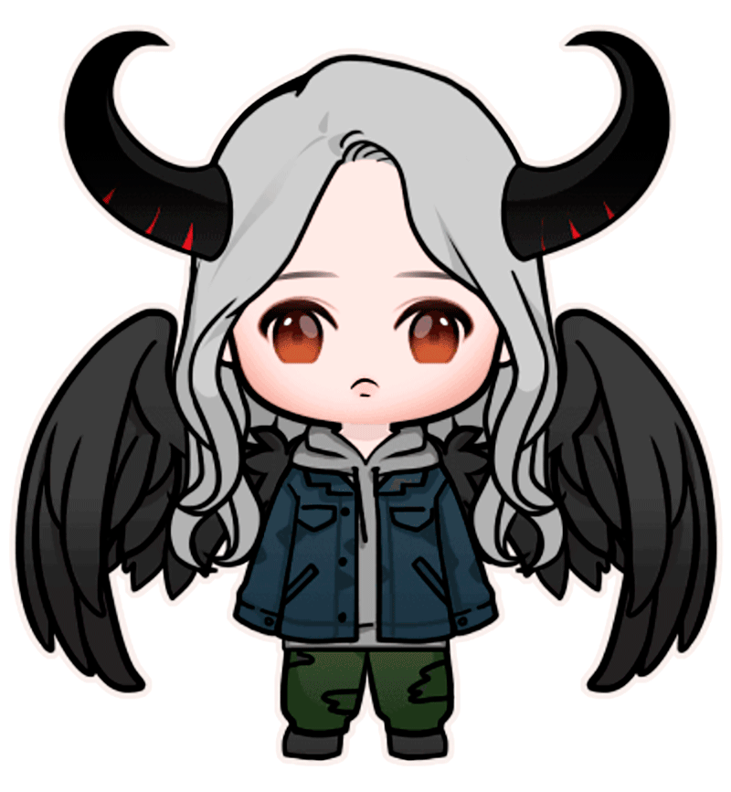
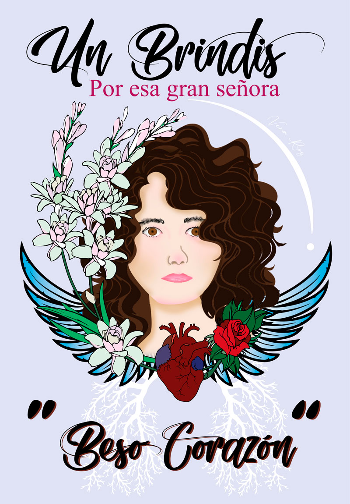
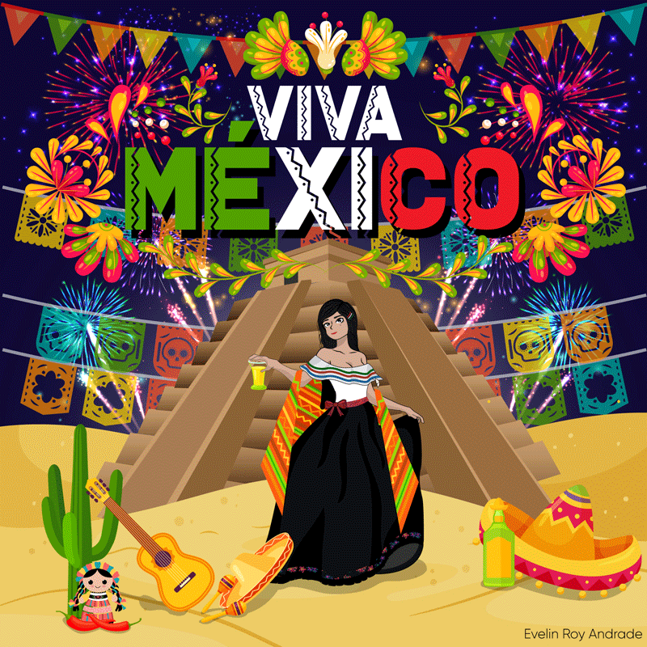
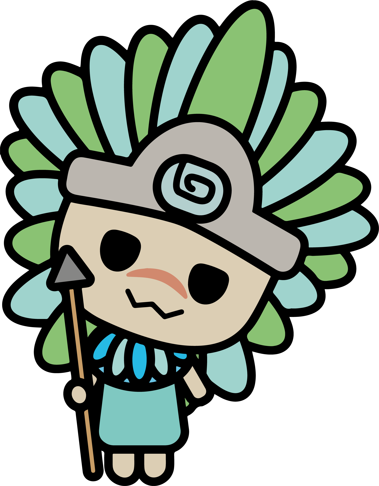
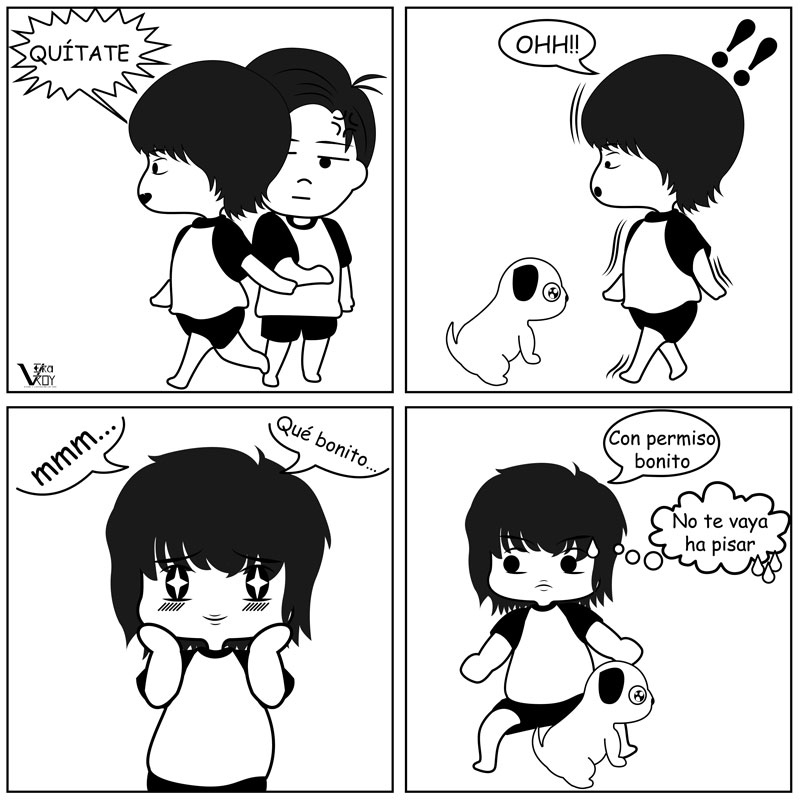
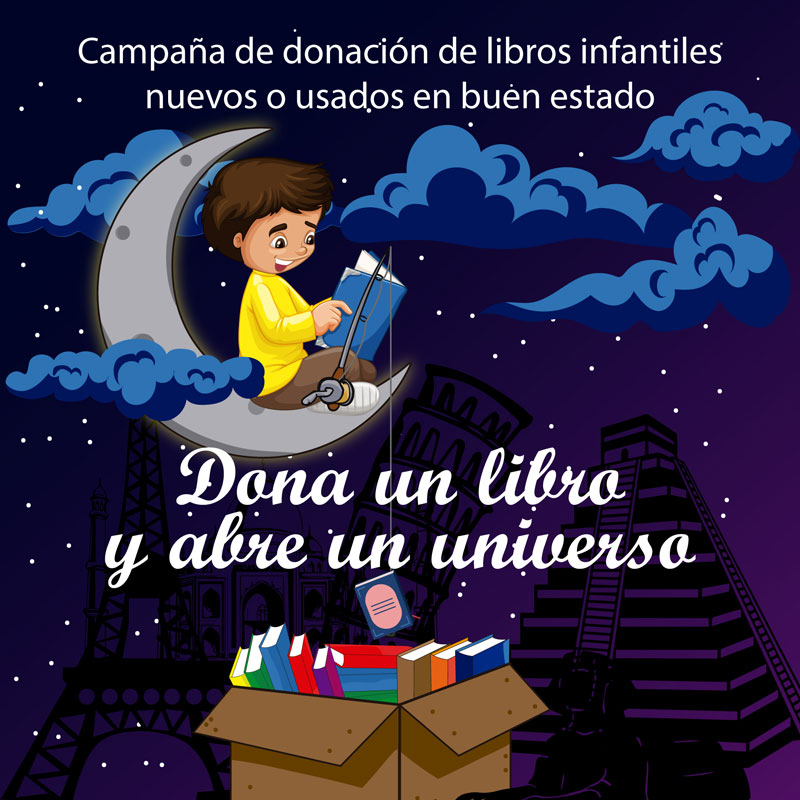

PORTAFOLIO DE EVIDENCIAS
Expresividad
Cartel en estilo de “la Renovación del cartel después de Art Nouveau”.

Problemática social
Inseguridad.

Preservación
Toloque Rayado de la biosfera de México en el estado de Puebla. Animal en peligro de extinción.

Los Olmecas
Entintado de cromo.

Diseño gráfico
Facultad de diseño gráfico y su evolución.

Autorretrato
Estilo kawaii

8 de marzo
En honor a Natividad Andrade.

México
Mes patrio.

Trabajo publicado en la página de AMOXTLI ANDANTE.
Temiktia
Personajes para Sanrio.

Comic infantil
Comic creado para los niños de bajos recursos.

Imprimido y entregado en comunidades de bajos recursos en Tehuacán Puebla por la fundación de AMOXTLI ANDANTE.
Tira cómica
Mis reacciones.

Campaña de libros
Imagen realizada para la fundación AMOXTLI ANDANTE.
